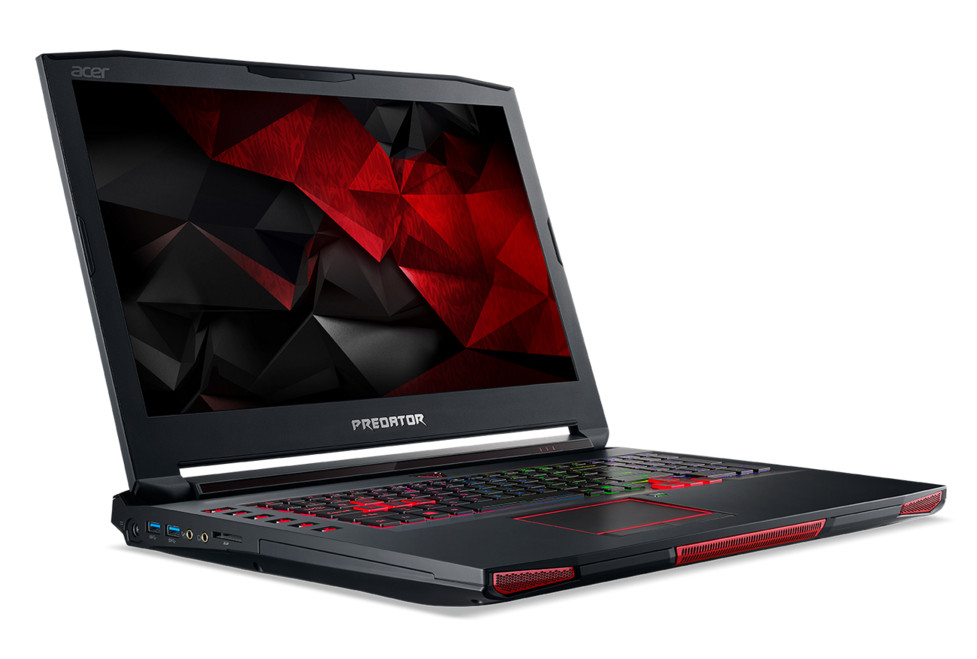

Laptop1:
1. Fix Overheating Problem in Acer Predator Helios 300
Heating problem is generally when heat is increased in excessive amount in your Acer Predator Helios 300.
The resulting heat may damage the internal components of the Laptop.
But it is apparent to say that electrical device or components produce heat and fans inside the Laptop help to move the air to keep the components cooled to normal temperatures.
How to Fix the overheating issue in Acer Predator Helios 300?
Removing the Dust and Lint by Cleaning venting in Acer Predator Helios 300: The vents are located under the case to allow the air to pass from there. The vents can get clogged or heat-generated parts can become covered with dust. This dust prevents air to flow around the fan blades which causes the fan to work harder when your Acer Predator Helios 300 is overheating. However, it is necessary to clean the dust accumulated in the vents.
Place your Acer Predator Helios 300 in a cooler room: Keeping your overheated Acer Predator Helios 300 in a cooler temperature can make a difference in temperature. Furthermore, this step is optional so you can move to another step.
Ensure that your Laptop has a proper space for ventilation: As discussed above the ventilation of your laptop should be proper. Good ventilation can decrease the overheating problem in your Acer Predator Helios 300. Keep your laptop upright and at the level surface for good ventilation.
Check for BIOS updates: Acer provides updates for BIOS and some other components of your Laptop. Check for updates
Test for any hardware failures: If all the solutions provided above are not able to fix your problem then you must check for any hardware failures. To fix any bad component on your Acer Predator Helios 300 – Contact Support
Use Low Power mode: In this state, your Laptop will consume less power and will remain cooled. There is a performance mode in your Laptop which should be enabled for resulting in lower system operating temperatures.
Read More about Overheating problem in Acer Predator Helios 300
2. Slow Hard Drive in Acer Predator Helios 300
You can face a slow hard drive problem with your Acer Predator Helios 300 which can also be caused by Windows 10.
The problem can cause slow file transfers and more time to load a program.
It is caused because of disorganized information which takes more time to put through data fragments on the drive.
There is an in-built Windows tool called Disk Defragmenter for clearing this problem easily.
To access this tool Click on the Windows button and search “Defragment and Optimize Drives”. Click on the result and start the process.
3. Battery Draining very fast in Acer Predator Helios 300
Is the battery of your Acer Predator Helios 300 not surviving for a few minutes after charge? then the battery of your Laptop needs to be replaced.
Replacing batteries is a very simple job just pop out the battery from the back of your Laptop.
The Discounted batteries for your Acer Predator Helios 300 are available at Batteries.com.
4. Sluggish Performance and Slow Boot time in Acer Predator Helios 300
If your Acer Predator Helios 300 is suffering from sluggish performance or hangups when you are using multiple applications.
If your Laptop needs more boot time then auditing the programs such as Bootloader is very necessary.
To fix this problem you have to disable programs which are not in use and download System Suite 7 Professional tool which is a startup manager and optimizer.
Upgrading the RAM is also a solution to Sluggish performance in Acer Predator Helios 300 as your laptop might require more memory. Purchase a compatible RAM from Crucial or Kingston for better performance.
5. Hard Drive Failure in Acer Predator Helios 300
Is the hard drive of your Laptop Crashing or the Loud clicking sounds are coming whenever it accesses data from the hard drive.
The solution to this problem on your Acer Predator Helios 300 is using online backup sites and replacing the hard drives.
Lastly, There are numerous tools available on the internet to fix the Hard Drive failure problem in your Acer Predator Helios 300.
6. Windows Shut down problems in Acer Predator Helios 300
The common shutdown problems can arise in your Acer Predator Helios 300 which can be cured by applying general fixes.
We will be helping you to diagnose the issue and troubleshoot the specific components of software causing the problem.
1. Common Fixes to Shut down problems
Uninstall all third-party programs such as Antivirus if any. These third-party programs can lead to shutting down of your computer. Also, you have a pre-installed antivirus program known as Windows Defender.
Next, Running programs should be closed as these apps can interfere in the shutdown process. In case the programs are unable to close you can use task manager to close them forcefully.
Finally, Update your Computer. To update your computer go to start and search for” check for updates”. Click on the result....
Link a teljes szöveghez

Laptop2:
Part 1: Acer Laptop Black Screen: How to Fix It?
If you are getting the Acer computer black screen even when the system is turned on, then you can try the following fixes.
Fix 1: Power Reset your Laptop
To start with, I'm going to list the simplest way to fix the Acer Aspire black screen problem. If there is a minor issue with its firmware or booting, then you can try to power reset your laptop. To do this, just press the Power button on your laptop and keep holding it for at least 15 seconds.
This will forcefully perform a soft reset on your Acer system and would turn it off. Afterward, let go of the Power button, wait for a while, and press the Power key again to turn it on.
Fix 2: Test the Acer Laptop with an External Monitor
If you have got the Acer black screen, then you first need to check whether the issue is with the screen or caused by a firmware problem. For this, I would recommend connecting your system with an external monitor. You can use the connecting cable and simply fix it with an external monitor. If you get the correct display on the external monitor, then it means the problem is with your laptop's screen (and not its firmware).
In this case, you can either replace your laptop's display or visit a service center to get dedicated assistance.
Fix 3: Try Certain Key Shortcuts
Another smart solution to fix the Acer Chromebook black screen of death includes the use of function keys. You might already know that there are certain functions and special keyboard shortcuts that we can use for different purposes.
Press the F2 key during the startup to enter the BIOS settings.
You can press the F10 key while the booting process to optimize it.
The ALT + F10 key combination during the startup can help you run the system troubleshooting.
Pressing the Windows + Ctrl + Shift + B keys at the same time to wake up your system if it has been asleep or hibernated.
Fix 4: Reinstall the Graphics Card Driver
Sometimes, even a driver-related issue can also cause the Acer computer black screen problem. For instance, if the driver has become corrupt, is outdated, or has not been installed properly, then it can make your Acer laptop go black screen after the logo. To fix it, you can consider reinstalling or resetting the graphic card driver.
Step 1. Firstly, go to the Start menu and launch the Device Manager from here. You can also go to its Control Panel > Device Manager to get this option.
Laptop3:
1. Power off your computer.
2. Power on your computer. As soon as you see the rotating loading circle, press and hold the power button until the computer shuts down.
3. Repeat this process a few times until you see the “Preparing Automatic Repair” screen.
4. When you get to the “Automatic Repair” screen, select Advanced Options > Troubleshoot.
5. Select Refresh your PC if you do not wish to erase data, or choose Reset your PC to erase all data and restore your system..
Tovább a teljes oldalhoz.